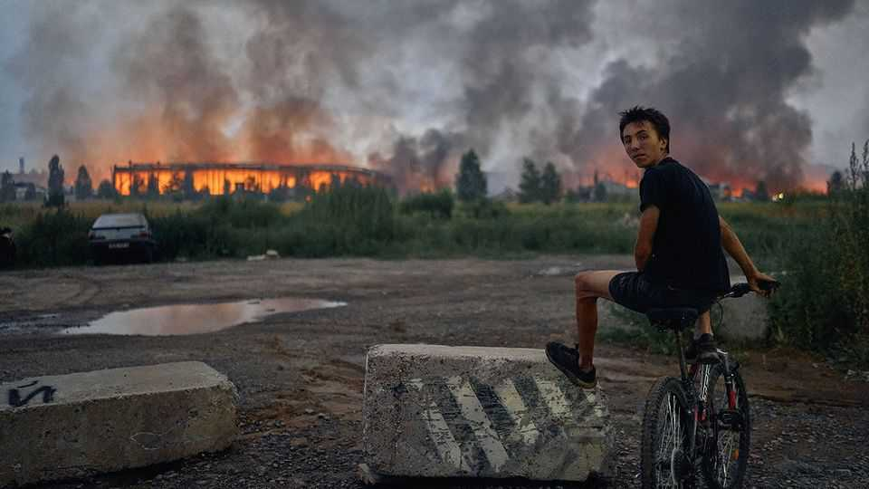

Russian attacks are doing severe harm to Ukraine’s economy
Out of interceptors, Ukraine is no longer winning the aerial war

Aug 20th 2026
NOT SINCE the first days of the war have shoppers in Kyiv faced empty supermarket shelves. Now they are once again. On July 19th a Russian ballistic missile slammed into a warehouse supplying the upmarket Goodwine store. Two weeks later strikes on two distribution hubs of Silpo, a larger chain, killed six workers. Nova Poshta, the private postal service on which most of Ukraine depends, has been hit repeatedly. Dmytro Krymsky, co-founder of Goodwine, estimates that strikes in the past three weeks have cost Ukrainian businesses around $500m. More troubling is Russia’s new tactic of hunting civilian cargo ships that use Ukraine’s Black Sea ports—threatening a far larger share of the economy.
The campaign against Ukraine’s civilian logistics is a long planned escalation of the conflict, and one made possible by a recent shift in the air war. Russian production of ballistic missiles is rising just as Ukraine’s supply of interceptors has dwindled. Ukraine’s defenders can now shield only a few high-priority targets. In July Russia profited by launching a record 198 ballistic and hypersonic missiles, mostly at the Kyiv region.
It is also an answer to Ukraine’s own drone strikes deep inside Russia. These have hit defence plants and oil infrastructure, closed the Sea of Azov to Russian shipping and burned warehouses of Wildberries, Russia’s e-commerce giant. Ukraine says the company ships equipment for Vladimir Putin’s war.
In late June Volodymyr Zelensky announced a 40-day “surge”, intended to force Mr Putin to negotiate. Many assumed that meant August would mark the high point of Ukrainian pressure. A Ukrainian intelligence source says it is a military action designed to have a “political and psychological” impact just in time for Russia’s sham parliamentary elections in September. Almost daily explosions, creeping ever closer to Moscow’s centre, have sown disquiet and embarrassed Mr Putin.
The campaign has inflicted economic damage on Russia, too. Strikes on refineries have knocked out upwards of 30% of the country’s operating capacity. Petrol rationing, which at its peak affected 80 regions, continues in 18. Wildberries has lost nearly a third of its facilities, at a cost of between $2bn-4bn. Elon Musk’s Starlink satellite network, immune to jamming, is available to Ukraine but not Russia over the occupied territories, giving the former dominance in mid-range drone operations. Ukrainian drones stalk Russian targets in and around Crimea and have helped stop Russian shipping through Azov ports.
But the choking now runs both ways, and Ukraine is more vulnerable. Odessa’s ports, the country’s economic lifeline, were the first to feel the pressure. Threatened at the war’s start, the deep-sea ports reopened first with a Turkish-brokered grain deal, and then with a protected corridor for Ukraine in 2023. Russia kept targeting port infrastructure, but shippers tolerated the risk, moving 210m tonnes over the following three years. The calculus changed in mid-July when Russia began hunting the ships themselves. On July 19th cruise missiles hit and sank a Turkish-owned cargo ship as it left Chornomorsk, one of three big ports in the region. Ten people were killed. Since then every vessel entering or leaving Odessa has been targeted. A few ships still dare make the run, but the ports are commercially dead.
The timing could hardly be worse, with 50m tonnes of harvest still to move. The alternatives are not attractive. “One ship of 100,000 tonnes is equivalent to 5,000 trucks, 5,000 drivers, and 5,000 border procedures,” says Dmytro Barinov, president of the Ukrport association. The situation is worse than it was in 2022, he says, when ports on the Danube offset some of the losses. Now the river’s low water level and Russian attacks make that route harder to use.
On the front lines things are grim for both sides. In parts of eastern Ukraine, Russia is still crawling forwards, but at a cost of more than 1,000 men a day—a rate its recruitment struggles to replace. Elsewhere, Ukraine inches ahead in local counter-attacks. Neither is achieving much. The focus of the war has thus largely shifted to the aerial campaigns. Ukraine mostly uses drones against Russian military targets, refineries and the arteries supplying Russian troops. Russia is using more destructive ballistic missiles against Ukraine’s defence industry, civilian logistics and energy networks.
Both sides inflate statistics. Ukraine’s general staff says it has caused $13.5bn-worth of losses to Russia’s refining industry since August 2025. Sergei Vakulenko of the Carnegie Endowment, a think-tank, reckons the real, immediate losses to business is perhaps one-tenth of that, and that it has barely touched state income. “The strikes hurt, but not where or on the timescale Ukraine claims,” he says.
Most worrying for Ukraine is Russia’s blockade of its sea exports. Ukraine cannot fully reciprocate. For that reason, Russia is likely to keep it up, regardless of diplomacy. Dragon Capital, a Ukrainian investment firm, estimates the blockade will cost the country around 0.6% of GDP this year.
Worse may follow. If the current harvest can’t be sold, farmers are likely to skip the winter sowing season altogether, says Alex Lisitsa, president of the Ukrainian Agribusiness Club. That could push losses in agriculture to between $10-12 billion, he says, around 5% of official GDP. The consequences will ripple outward, threatening food security and Ukraine’s foothold in its traditional markets in Africa and the Middle East. “It’s as if we played open football with the Brazilians,” rues one former senior official. “We scored three and are celebrating, but they scored 13.”
This year, Ukraine has defied the odds and regained battlefield momentum. Its progress was always likely to slow as winter approached; in the event, the pressure has arrived earlier. Unless Ukraine finds a reliable source of ballistic interceptors, its economy and military prospects will take a serious hit. Western partners will need to step up support. The worst-case scenario being whispered in Kyiv is that Russian strikes on energy, water sources and perhaps even sewage will force mass emigration. “Would they go that far? They might,” says a Ukrainian security source. Mr Krymsky says business is adapting. “A colleague was telling me how they had a big meeting yesterday called Autumn Actions, about future plans,” he says. “Today it already has a new name: Survive Till April.” ■